This type of data was chosen due to uprising numbers of COVID-19 deaths and infections for Homes and Nurses. Being part of family of nurses, I proposed this type of data to learn more on how to find the right sources that can provide correct and organized data.
1. We have explored the NY Times data from https://www.nytimes.com/interactive/2020/us/coronavirus-us-cases.htmlfor America’s nursing homes outbreaks surge.
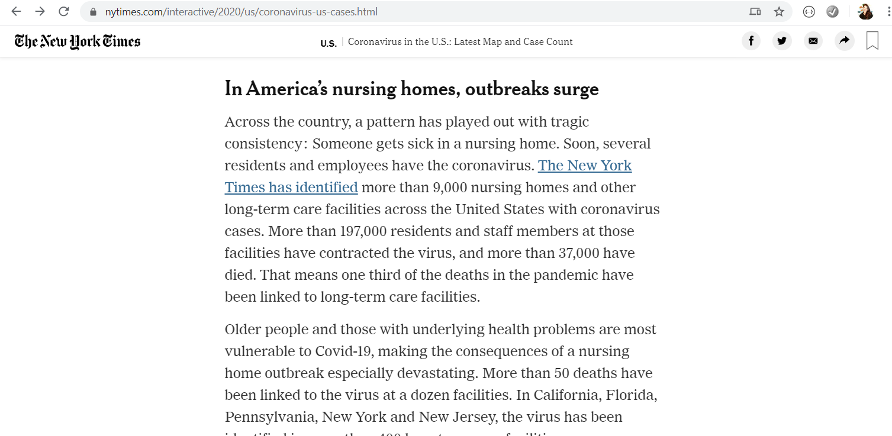2. As we Inspected through the data and applied some parsing on the data tables. We were only getting 10 out of 732 rows from the HTML site. It is not pulling the whole data table.
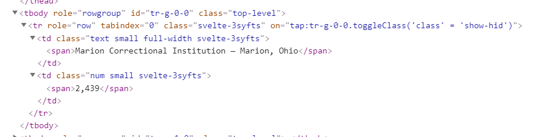 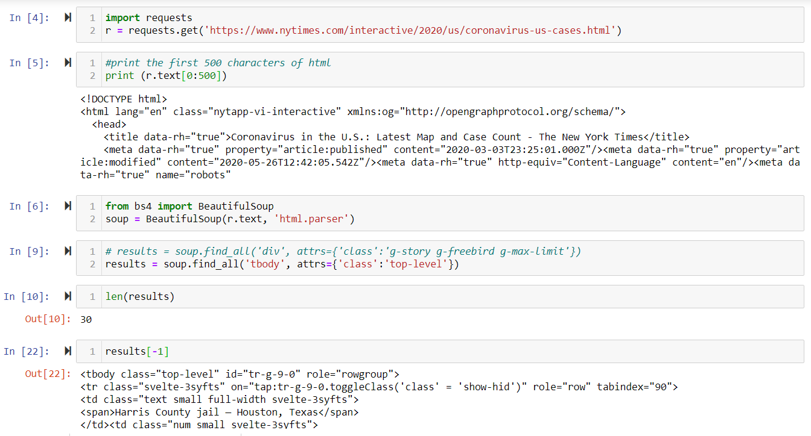3. We checked using the View Page Source, and saw that after the 10th row, the table ends, and a JSON reference is nested within a script. We explored the JSON reference and it was a dump that contains too much data and it is really hard to figure out how to extract our target.
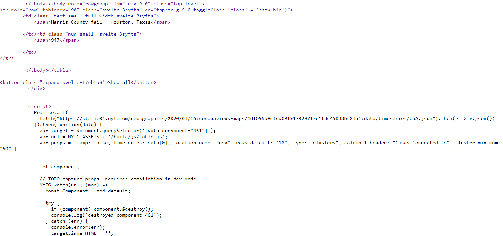4. Then we went back to Inspect the page and seen that part of the script for the tables is Java Script. Hence, we think the process to scrape the data from this website requires further knowledge on Java Script.
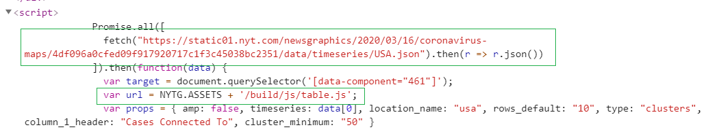 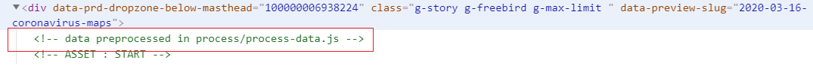4. Given the challenges of this website, we browsed through the website and found a link more focused on Americas Nursing Homes https://www.nytimes.com/interactive/2020/05/09/us/coronavirus-cases-nursing-homes-us.html
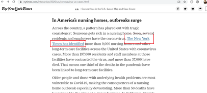 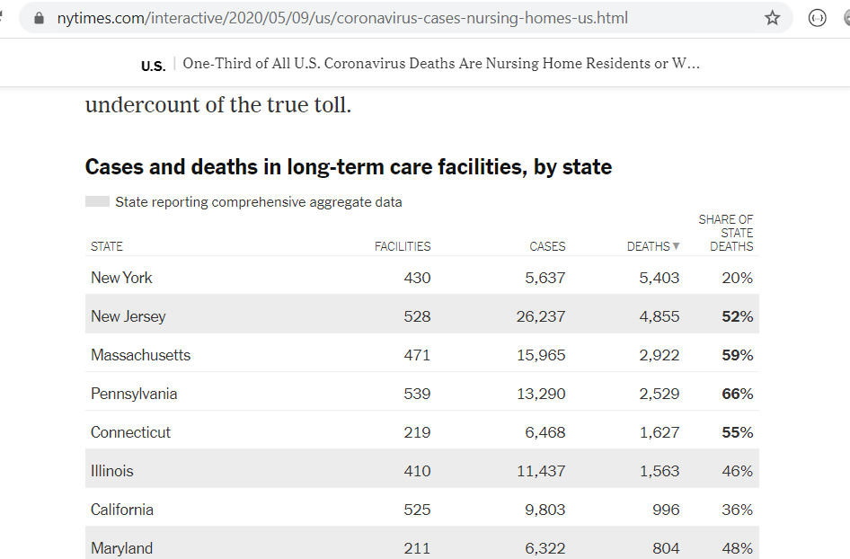5. We reached out to our mentor Khaled Karman and showed us how to find the data directly from Inspect under Network tab. We learned that there are a lot of links connected into the website and the best way to find the targeted data is by browsing through the Network and find the file whose title is similar to what we are looking for.
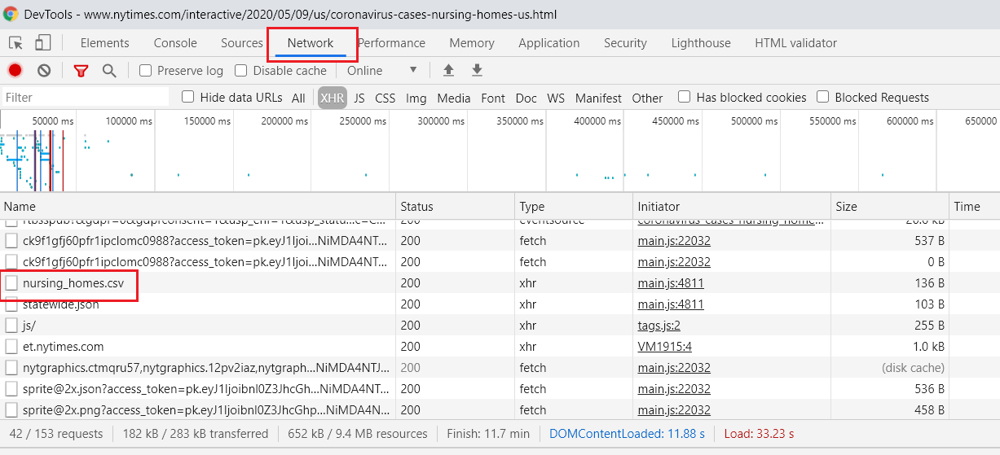6. We double clicked the nursing_homes.csv file and true enough it contains the Nursing Home COVID-19 deaths and cases per State.
1.We transformed the data by renaming the column titles specific to nursing home cases and nursing home deaths..
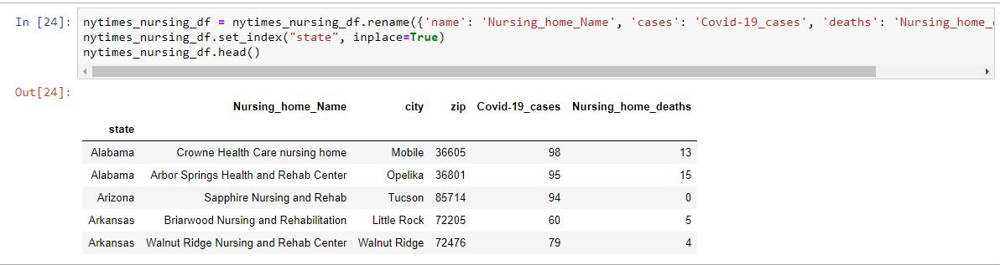1. Save the merged data frames as CSV and load to database to be the final table for production.
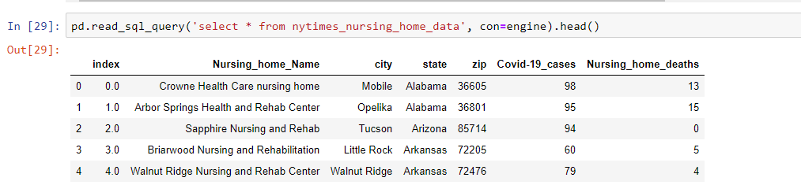